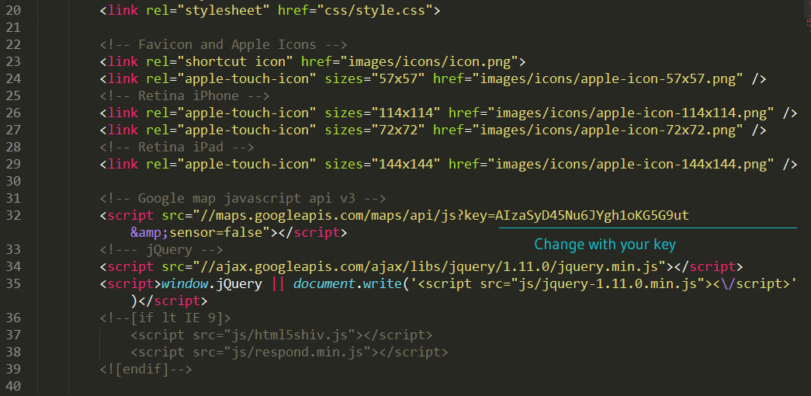
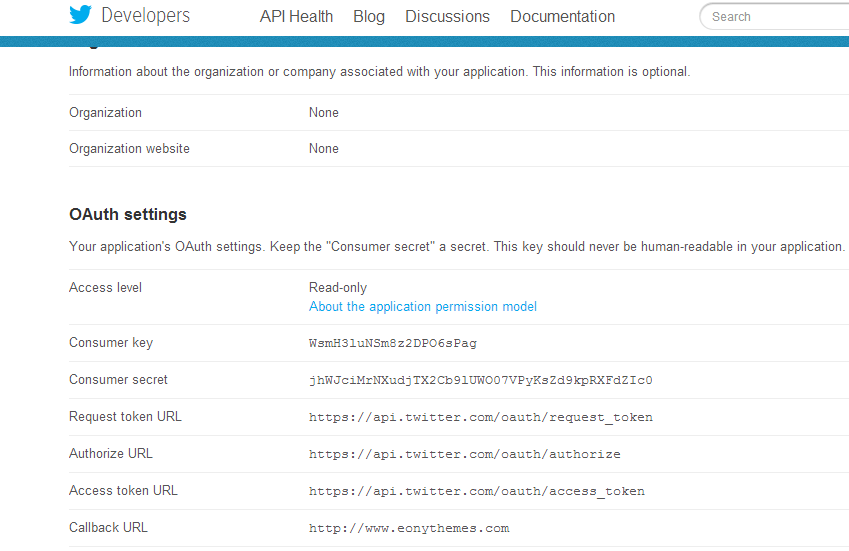
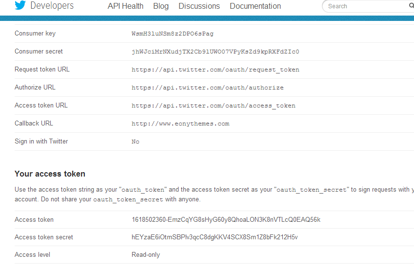
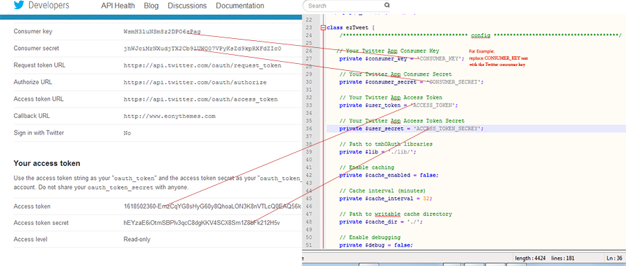
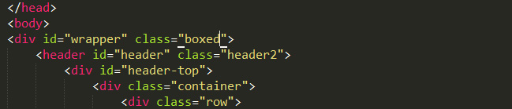
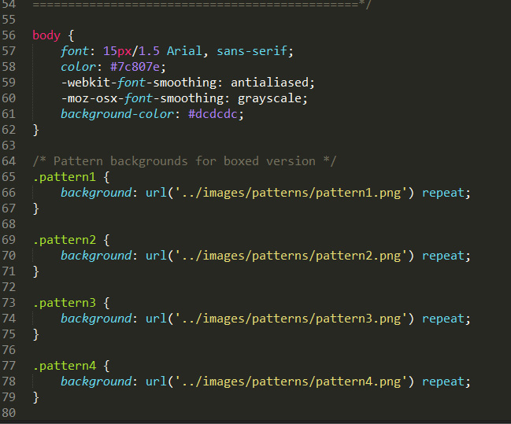
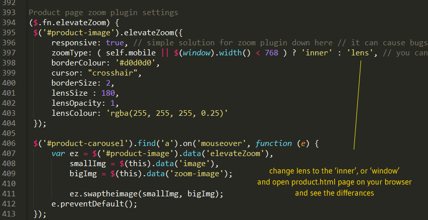

Venedor - Responsive eCommerce Template
Documentation
1 - Getting Started
Thank you for purchasing Venedor Template. If you have any questions that are beyond the scope of this documentation file, please feel free to contact me via my user page contact form here.
This is Venedor's documentation file. Please read this file carefully before contacting with us for support.
1.1 - Inclueded Files
After downloading Venedor template and un-zip it, you will find the following files.
- Venedor
- Green
- Blue
- Orange
- Pink
- Brown
- Green2
- Blueorange
- Blueorange2
- Browngreen
- Documentation
- Psds
- Sprites
- Revolution slider documentation
1.2 - Venedor Versions
Wit the latest update Venedor Template comes with 10 versions. Green version, Blue version, Orange version, Pink Version and etc... Their differences are color-schemes, product layouts and home varients.
1.3 - Support
If you have a problem or found a bug or want to ask something about template, please feel free to contact me from my email address.
2 - Html
All versions have 50 Html Files. This files coded with Html5 new features/tags. All html files are well coded with the Html new tags (like header,footer, nav etc..) and tested with Markup Validation Service. They are all valid. And to help you understand better all close tags marked with the html comments like below.
<section id="content">
<p>This is content<p/>
</section><!-- End #content -->>
All Venedor Html files have 3 main sections. header, section#content and footer... Header section contains logo, navigation menu, some top informations etc.. section#content contains main content. Main content changes for all html pages. Footer section contains twitter feed, Footer widgets, Copyright text etc...
With the update 1.4, We included 13 element html pages to help you to use elements better and faster. And We included 7 Header Varients and 3 Footer Varients for each version.
3 - Css
This is the part where Css files are explained.
3.1 - General
All css files are tested, commented and well-coded. Style.css file is the main css file of the Venedor. Other files are listed below...
- bootstrap.min.css - Bootstrap Framework
- font-awesome.min.css - FontAwesome font icons
- animate.css - Animate.css
- jquery.selectbox.css - For custom select
- bootstrap-switch.css - Switch Buttons
- prettyPhoto.css - PrettyPhoto Plugin Css File
- owl.carousel.css - Owl Carousel Plugin Css File
- colpick.css - ColorPick Plugin Css File ( Used on options panel)
- responsive.css - These files have the media queries for responsive design and retina display
3.2 - Difference of Versions
All Homepage sliders have their own css files. All related styles (responsive styles included) are seperated.
!! With the 1.5 update, we converted sequence slider to the revolution slider, for better responsiveness. So we used only 2 main slider for home pages. Bxslider for orange version, and revolution premium slider for other versions...
- jquery.bxslider.css Bx Slider Plugin for Orange Version
- revslider.css Revolution Plugin Styles for Other versions
4 - Javascript
This is the part where javascript files are explained.
4.1 - General Javascript
All codes are commented and well coded. Id you want to change something, please be careful. If you are not sure what you are doing please contact me. So that i can help you.Other than home pages sliders and some others, all javascript/jquery codes are placed at the main.js file.
Caution: Owl carousel navigation buttons have specific ids. For the next button, you have to create id name with 'next' word to make it work. Please check code example below.
Update 1.4: We rewrite main.js file with the singleton pattern, and tidied code for better performance.
P.S : Now i included my api keys, for google map and twitter feed to prevent it from crushing. But You should follow the google map and twitter feed section and get your own api keys for your own website.
var brandSlider = $('div.brand-slider.owl-carousel');
if (checkSupport(brandSlider, $.fn.owlCarousel)) {
brandSlider.owlCarousel({
items: 6,
itemsDesktop : [1199,5],
itemsDesktopSmall: [979,4],
itemsTablet: [768,2],
itemsMobile : [479,1],
slideSpeed: 400,
autoPlay: true,
stopOnHover: false,
navigation: false,
pagination: false,
responsive: true Place your id names like below at the main.js file when you are callin plugin
}).data('navigationBtns', ['#brand-slider-prev', '#brand-slider-next']);
4.2 - Google Map
Please go to Google Map Api Key Page. Open contact.html and find Google map javascript api part that placed at the header section.
Then open main.js file. Find Google javascript api v3 section. And change the parts as described at below.
/* change your with your coordinates */
var myLatLng = new google.maps.LatLng(41.039193, 28.993818), // Your coordinates
mappy = {
center: myLatLng,
zoom: 15,
scrollwheel: false,
mapTypeId: google.maps.MapTypeId.ROADMAP,
styles: [{
"elementType": "geometry",
"stylers": [{
"hue": "#000"
}, {
"weight": 1
}, {
"saturation": -200
}, {
"gamma": 0.70
}, {
"visibility": "on"
}]
}]
};
var map = new google.maps.Map(document.getElementById("map"), mappy),
newpin = 'images/pin.png';
new google.maps.Marker({
position: myLatLng,
map: map,
icon: newpin,
animation: google.maps.Animation.DROP,
title: 'Venedor' Change with your title
});
4.3 - Twitter Feed
- Step 1: Go to Twitter Dev Page. ( You must sign in)
- Step 2: Click to the Create a new application button.
- Step 3: Fill the inputs and then click to the Create your Twitter application button.
- Step 4: Now you will see a page like this. 
- Step 5: Scroll down and Click to the Create my access token button. ( Click couple of times until you see created information box )
- Step 6: Now you will see a page like this. 
- Step 7: Open Venedor Template folder, open js folder and then twitter folder. Open index.php file with any text editor. And Scroll down find these variables. Starts about 25. lines... And change its values with your new created keys.
// Your Twitter App Consumer Key private $consumer_key = 'CONSUMER_KEY'; // Your Twitter App Consumer Secret private $consumer_secret = 'CONSUMER_SECRET'; // Your Twitter App Access Token private $user_token = 'ACCESS_TOKEN'; // Your Twitter App Access Token Secret private $user_secret = 'ACCESS_TOKEN_SECRET'; - Step 8: After changing keys. Go back to js folder. And open main.js file with your text editor.
- Step 9: Find Twitter Feed Plugin section and change query with whatever you want search from Twitter.
- Step 10: Done... Refresh your page enjoy :)
4.4 - Flickr Feed
Go to Flickridgtrr. And get your Flickr id number. Go to js folder and open main.js file. Find Flickr feed section. And change id with your new id.
$('ul.flickr-feed-list').jflickrfeed({
limit: 6,
qstrings: {
id: 'xxxxxxxxxxxx' -- Change xxxxxxxxxxxx with your new id
}
}
5 - Credits
Some resources that we used in Venedor Template.
- jQuery
- Bootstrap (Front-end framework)
- Font Awesome (Font icons)
- Sequence Slider (No longer in use - Changed with revolution slider)
- Jquery jscroll pane (for category filter)
- BxSlider (Orange Version Home Slider)
- Revolution Slider ( Premium Slider - $14)
- Flex Slider 2
- Owl Carousel (For carousels)
- PrettyPhoto (Lightbox plugin)
- FitVids.js (Plugin for fluid width video embeds)
- Isotope Plugin (Portfolio filter/sort - magical layouts plugin - Developer License $25)
- Retina.js (RDR)
- Colpick(Color picker plugin)
- Elevate Zoom Jquery Plugin(jQuery zoom plugin)
- Elastslide Jquery Plugin(Responsive jquery carousel)
- noUiSlider(jQuery Range Slider)
- Modernizr (Custom download - Some plugins required Modernizr)
- jflickrfeed (Flickr Feed Plugin)
- Tweet.js (Twitter Feed Plugin)
- HoverIntent Plugin
- Html5Shiv.js (Support for Html5 Elements)
- Responsd.js (Support CSS3 Media Queries)
- Google Fonts
- Addthis
- Wow.js (For scroll animations with animate.css)
- Animate.css
- Supersized Plugin(For Browngreen version background slider)
- Bootstrap Switch(Swtich buttons)
- Selectbox Plugin (Custom Select)
6 - Updates
* Date : [ 11.04.2014 ] - 1.0 - Release
* Date : [ 12.04.2014 ] - 1.1 - Update + Added Brown version - Fixed some minor css bugs - Fixed Revolution plugin loading.gif issue for Pink/Blue/Brown version
* Date : [ 15.04.2014 ]
- 1.2 - Update
- Fixed carousels alignment issue
- Fixed some minor css bugs
+ Activated prettyphoto lightbox plugin gallery feature
* Date : [ 22.04.2014 ]
- 1.3 - Update
+ Added Green2 version
- Fixed some minor css bugs
* Date : [ 25.07.2014 ]
- 1.4 - Update
+ Added blueorange version
+ Added blueorange2 version
+ Added browngreen version
+ Added 13 detailed elements page
+ Added 7 Header variants for each versions
+ Added 3 Footer variants for each versions
+ Added Portfolio Masonry pages
+ Changed Product zoom plugin
- Updated bootstrap 3.2
- Updated Font Awesome icons
- Updated jquery
- Updated revolution slider
- Updated retina.js
- Rewrited main.js file
- Fixed small bugs
* Date : [ 29.07.2014 ]
- 1.5 - Update
- Changed sequence slider to reolution slider (For green and green2 version)
- Fixed some css bugs
* Date : [ 10.08.2014 ]
- 1.6 - Update
- Updated Revolution Slider
- Fixed Revolution Slider Transiton issues
7 - FaQs
Q : Customization..
A : We do not provide customization. But we try to help you as much as we can.
Q : Wordpress - Style.css missing error..
A : This is not a wordpress theme. This is a 'Html template'! You can not upload this file to wordpress and expect it to work as it is. It will not work.
Q : How to change layout to boxed?
A : To change layout to boxed, you need add the element, which has id wrapper, boxed class. If you want don't want to vertical space at boxed version just change class name to boxed-long. You have to find wrapper element in all html files and class name manually.
Or you can use this code. Simple as that.
$('#wrapper').addClass('boxed'); // Just copy this line to the main.js file
or
$('#wrapper').addClass('boxed-long'); // Just copy this line to the main.js file
Q : How to change background color or add a pattern?
A : To add pattern to your background or to change background color. You need to use one of the boxed layouts. Open css folder and find style.css file. If you want to change background colour. Find body element than change backgrond-color.
To add pattern. You change open html files and add pre-defined classes ( patter1-pattern30 ) to the body element. Or you can open style.css file and copy pattern classes' background to the body's background.
Or you can use these codes to change backgrounds. Open main.js file and use these codes below.
// background color
$('body').css('background-color', 'YOUR_COLOR_HERE'); // Just change YOUR_COLOR_HERE with any color - green, yellow,white or color code #fff, rgba(255, 255, 255) -- like so.
or
/* You can coose classes from pattern1 to pattern30, There are predefined 30 classes for pattern background */
$('body').addClass('pattern10'); // Copy this code to main.js file
Q: How to change product zoom type?
A: open main.js file. find productZoomImage function. Check out the example image below.
